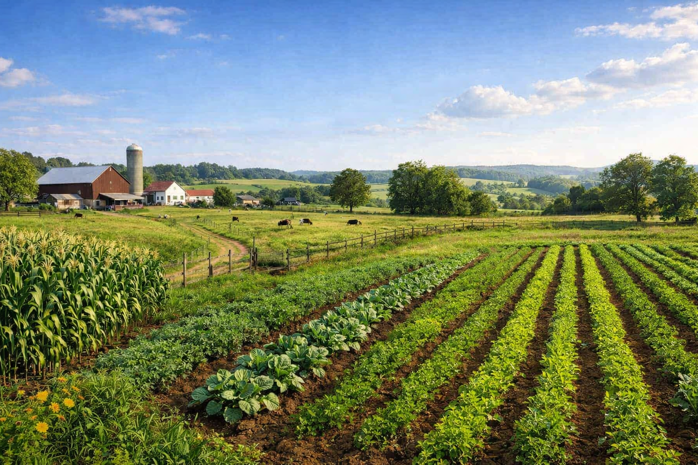
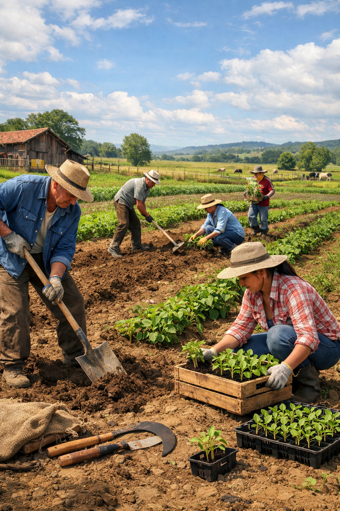
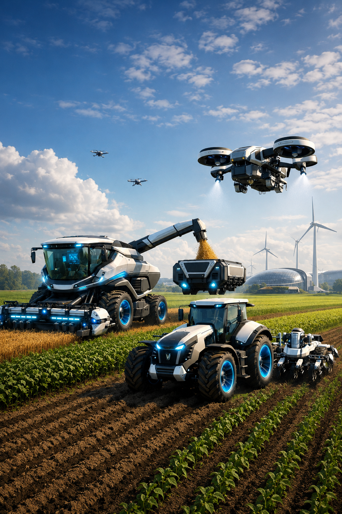

Antes o solo era revirado com enxadas ou arados rudimentares puxados por bois ou cavalos. O processo era lento e exigia enorme esforço físico.
Não existiam sistemas complexos de irrigação ou previsões meteorológicas precisas. Os agricultores dependiam totalmente das chuvas na época certa. Secas ou enchentes podiam significar a perda de um ano inteiro de trabalho.
Para o solo não esgotar seus nutrientes, os antigos alternavam os tipos de plantio em uma mesma área ou deixavam a terra descansar por um período (pousio). As sementes eram lançadas à mão (a lanço) e a colheita era feita com foices, cutelos ou manualmente, fruto por fruto.
Não existiam sementes modificadas em laboratório para serem resistentes a pragas. As plantações eram muito mais vulneráveis a insetos e doenças, e o controle de pragas era feito de forma caseira ou manual.

Hoje temos tratores, colheitadeiras e plantadeiras gigantes automatizadas realizam em minutos o trabalho que antes levava dias e exigia dezenas de pessoas.
O campo hoje utiliza GPS, drones e sensores para mapear o solo. O agricultor sabe exatamente onde falta água ou nutrientes, aplicando insumos apenas onde é necessário.
Sementes modificadas geneticamente em laboratório são muito mais resistentes a pragas, secas e doenças, garantindo colheitas muito maiores.
Produz-se muito mais alimento em menos espaço e tempo. O trabalho pesado e braçal foi drasticamente reduzido; o perfildo trabalhador rural mudou para operadores de máquinas e técnicos. O controle de pragas, a irrigação automatizada e a previsão do tempo via satélite reduzem o desperdício de recursos como água e defensivos.